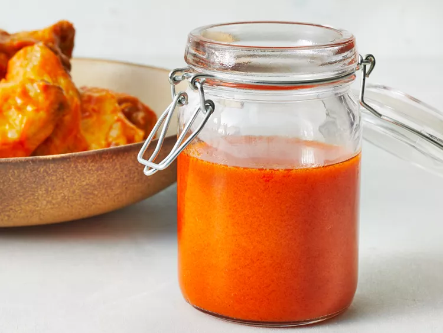

Buffalo Chicken Wing Sauce

Description
Everyone needs a good Buffalo sauce recipe in their back pocket. Once you try Chef John's tried-and-true Buffalo sauce (inspired by the original recipe from Buffalo, New York), you'll never go back to the bottled stuff.
Ingredients
- ⅔ cup hot pepper sauce (such as Frank's RedHot)
- ½ cup cold unsalted butter
- 1 ½ tablespoons white vinegar
- ¼ teaspoon Worcestershire sauce
- ¼ teaspoon cayenne pepper
- ⅛ teaspoon garlic powder
- salt to taste
Steps
- Gather all ingredients.
- Combine hot sauce, butter, vinegar, Worcestershire sauce, cayenne, garlic powder, and salt in a pot over medium heat. Bring to a simmer while stirring with a whisk.
- As soon as the liquid begins to bubble on the sides of the pot, remove from heat, stir with the whisk, and set aside for use.
- Enjoy!